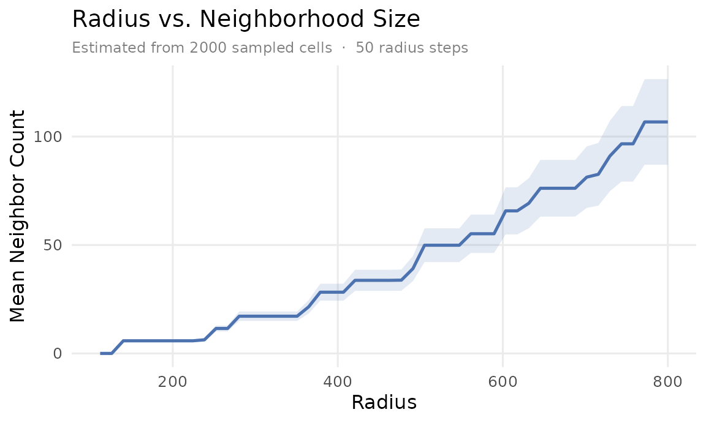
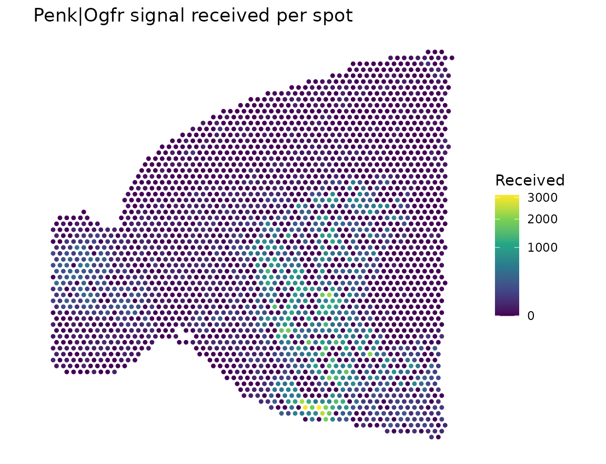
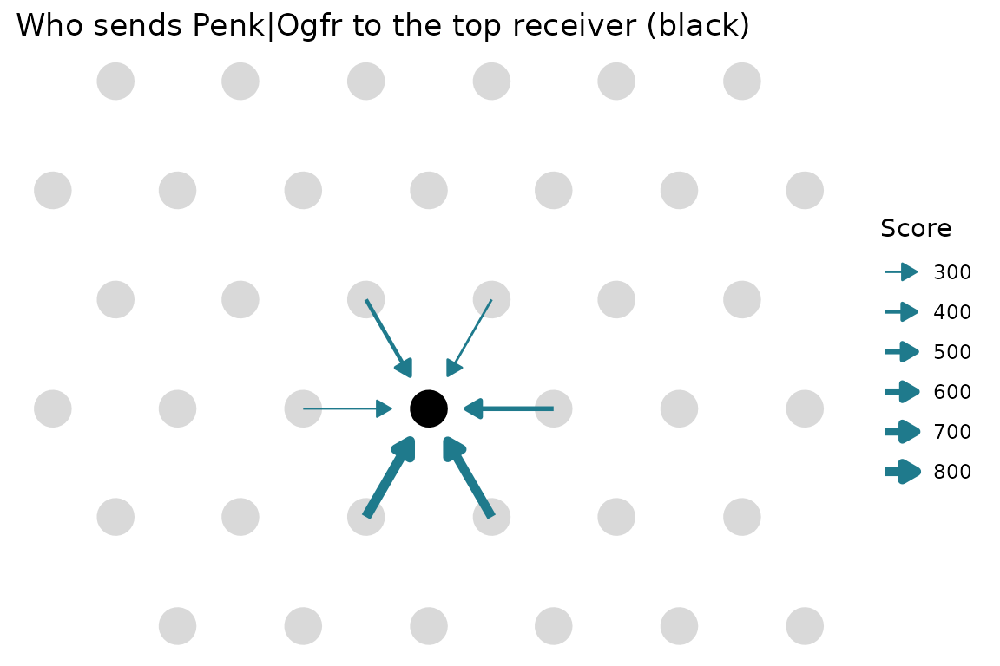

This tutorial runs a full spatial analysis on a public 10x Visium section of the mouse brain: one anterior sagittal slice with 2,696 spots. You’ll score LR signaling between neighboring spots, map a signal onto the tissue, and trace it back to the spots that sent it.
With n.cores = 2, the slowest step takes about 4
minutes.
Get the data
The dataset comes from SeuratData, which isn’t on CRAN. Run this once; the download is about 143 MB. SeuratData also installs the Seurat package, so the first install can take a while.
install.packages(c("remotes", "SeuratObject"))
remotes::install_github("satijalab/seurat-data")
SeuratData::InstallData("stxBrain")Then load it. stxBrain holds four sections, and we use
anterior1.
library(NICHESv2)
library(data.table)
library(ggplot2)
library(SeuratObject)
library(SeuratData)
data("anterior1")SeuratData objects keep the Seurat version they were saved with.
extract_NICHESInputs_Seurat() reads both V4 and V5 objects,
so you don’t need to update them first.
Extract the inputs
inputs <- extract_NICHESInputs_Seurat(
seurat.obj = anterior1,
assay = "Spatial",
layer = "counts",
verbose = FALSE
)
dim(inputs$count.mtx)
#> [1] 31053 2696Spatial coordinates sit in the image part of the Seurat object, so
add them to the metadata as x and y. Matching
by barcode keeps every spot aligned.
coords <- GetTissueCoordinates(anterior1)
inputs$meta.data$x <- coords[rownames(inputs$meta.data), "x"]
inputs$meta.data$y <- coords[rownames(inputs$meta.data), "y"]Choose a neighborhood
Explore_Radius_Neighborhood() shows how many neighbors
each radius would give, before you build anything.
radius.table <- Explore_Radius_Neighborhood(
inputs$meta.data[, c("x", "y")],
r.max = 800
)
The curve rises in steps because Visium spots sit on a hexagonal
grid. The first step is the ring of 6 touching spots. This tutorial uses
k = 6, which gives those immediate neighbors. Passing
rad instead would use a fixed radius.
This is one tissue section, so sample.col isn’t needed.
Set it when your data has several sections, so that no edges cross
between them.
Build the NICHESObject
Raw counts give scores on an absolute scale. With
"connectomedb2025" you don’t need to download anything
else, and species must match your data.
obj <- create_NICHESObject(
count.mtx = inputs$count.mtx,
meta.data = inputs$meta.data,
LRM.db = "connectomedb2025",
species = "mouse",
mode = "spatial",
k = 6L,
method = "product",
n.cores = 2L,
verbose = FALSE
)
dim(obj)
#> cells genes edges LRMs
#> 2696 31053 18500 3097There’s one row in $edge.data for each non-zero (edge,
LR pair) score:
| edge | LRM | score | score.norm |
|---|---|---|---|
| AAACAAGTATCTCCCA-1|AAACAAGTATCTCCCA-1 | Adam15|Itgav | 4 | 0.002 |
| AAACAAGTATCTCCCA-1|AAACAAGTATCTCCCA-1 | Adam23|Itgav | 2 | 0.001 |
| AAACAAGTATCTCCCA-1|AAACAAGTATCTCCCA-1 | Adamts1|Lrp1 | 4 | 0.002 |
Find the strongest signals
Summing across all edges shows which LR pairs dominate. Abundant genes rise to the top, as they do with any magnitude-based score on raw counts.
| LRM | total.score | edges |
|---|---|---|
| Ppia|Bsg | 22,906,784 | 18,316 |
| App|Aplp1 | 11,794,512 | 18,389 |
| Snca|Aplp1 | 5,434,808 | 17,208 |
| Apoe|Lrp1 | 4,286,950 | 17,273 |
| App|Aplp2 | 4,006,297 | 17,971 |
Aggregate by neighborhood
obj <- aggregate_NICHESObject(obj, verbose = FALSE)
agg <- obj$aggregations$neighborhood.edge.aggThis dataset has no cell-type labels, so we leave out
cell.type.col and skip the composition table.
Map a signal onto the tissue
Penk|Ogfr is a useful example, because Penk is
strongly enriched in the striatum. score.in.sum adds up
everything a spot receives from its neighbors for this LR pair.
one.lrm <- agg[LRM == "Penk|Ogfr", .(cell, score.in.sum)]
plot.dt <- merge(
obj$cell.meta[, .(cell, x, y)],
one.lrm,
by = "cell", all.x = TRUE
)
plot.dt[is.na(score.in.sum), score.in.sum := 0]
ggplot(plot.dt[order(score.in.sum)], aes(y, x, color = score.in.sum)) +
geom_point(size = 0.9) +
scale_x_continuous(NULL, labels = NULL) +
scale_y_reverse(NULL, labels = NULL) +
scale_color_viridis_c(name = "Received", trans = "sqrt") +
coord_equal() +
labs(title = "Penk|Ogfr signal received per spot") +
theme_minimal(base_size = 11) +
theme(panel.grid = element_blank())
Trace a signal back to its senders
Because every edge is stored, you can see which neighbors sent the
signal to the strongest receiver. share is each sender’s
part of the total.
receiver <- one.lrm[which.max(score.in.sum), cell]
senders <- merge(
obj$edge.data[LRM == "Penk|Ogfr", .(edge, score)],
obj$edge.list[ReceivingCell == receiver & SendingCell != receiver],
by = "edge"
)
senders[, share := score / sum(score)]
senders[order(-score), .(SendingCell, score, share)]| SendingCell | score | share |
|---|---|---|
| AGTACAGAAGCTTATA-1 | 858 | 0.275 |
| ACCGAGTCTCCTTATT-1 | 813 | 0.261 |
| GACCACACTTCCCTTT-1 | 474 | 0.152 |
| TAATACTAGAACAGAC-1 | 414 | 0.133 |
| GGGCAGTCAACGCCAA-1 | 297 | 0.095 |
| GAGATGGCTTTAATCA-1 | 261 | 0.084 |
spots <- obj$cell.meta[, .(cell, x, y)]
center <- spots[cell == receiver]
nearby <- spots[abs(x - center$x) < 450 & abs(y - center$y) < 450]
arrows <- merge(senders, spots, by.x = "SendingCell", by.y = "cell")
arrows[, `:=`(x.end = x + 0.7 * (center$x - x),
y.end = y + 0.7 * (center$y - y))]
ggplot() +
geom_point(data = nearby, aes(y, x), color = "grey85", size = 7) +
geom_point(data = center, aes(y, x), color = "black", size = 7) +
geom_segment(
data = arrows,
aes(x = y, y = x, xend = y.end, yend = x.end, linewidth = score),
color = "#1f7a8c",
arrow = arrow(length = unit(2.5, "mm"), type = "closed")
) +
scale_linewidth(range = c(0.4, 2), name = "Score") +
scale_x_continuous(NULL, labels = NULL) +
scale_y_reverse(NULL, labels = NULL) +
coord_equal() +
labs(title = "Who sends Penk|Ogfr to the top receiver (black)") +
theme_minimal(base_size = 11) +
theme(panel.grid = element_blank())
All of these edges share one receiver, so the differences come only from how much Penk each neighbor expresses. Two neighbors supply more than half of the signal.
Export the edges
export_to_TissuePlex() needs the arrow package and
writes one Parquet file.
out.file <- file.path(tempdir(), "edges.parquet")
export_to_TissuePlex(obj, output.path = out.file, celltype.col = NULL)
round(file.size(out.file) / 1e6)
#> [1] 43The export guide shows what to do with that file.
Data source
The data are from 10x Genomics, “Mouse Brain Serial Section 1 (Sagittal-Anterior)”, Space Ranger 1.0.0, licensed under CC BY 4.0.